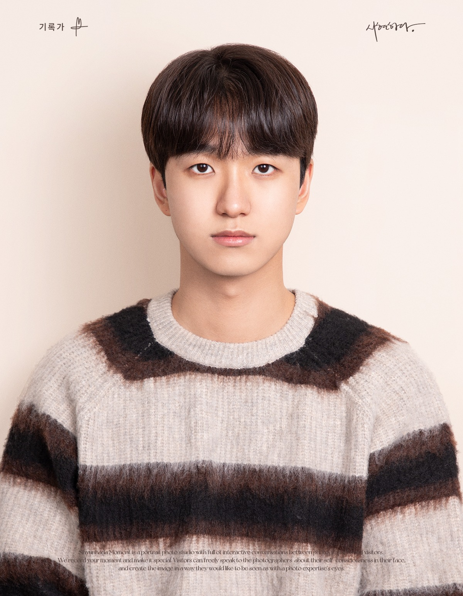
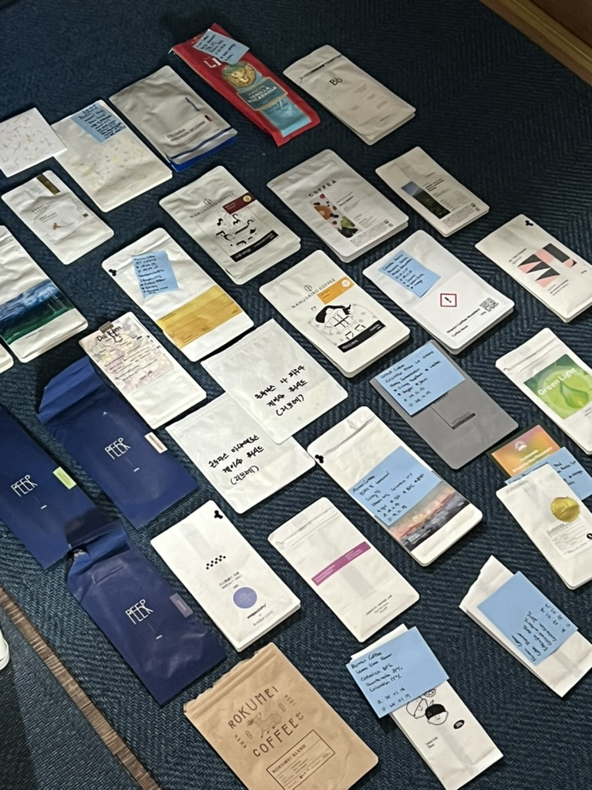
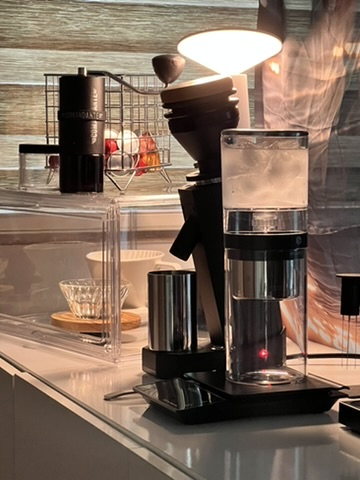

RESEARCHER & COFFEE ENTHUSIASTUlsan, KOREA
THE PATH SO FAR
A background in people,
a focus on preference.
Education
Earlier experience
01 / RESEARCH
Publications
Questions explored. Ideas shared.
International
Domestic
02 / SELECTED WORK
Projects
Connecting data to understanding.
03 / INTELLECTUAL PROPERTY
Patent
04 / TOOLKIT
Skills
Research methods and practical tools.
CERTIFICATION


05 / BEYOND RESEARCHHAND DRIP · SLOW MOMENTS